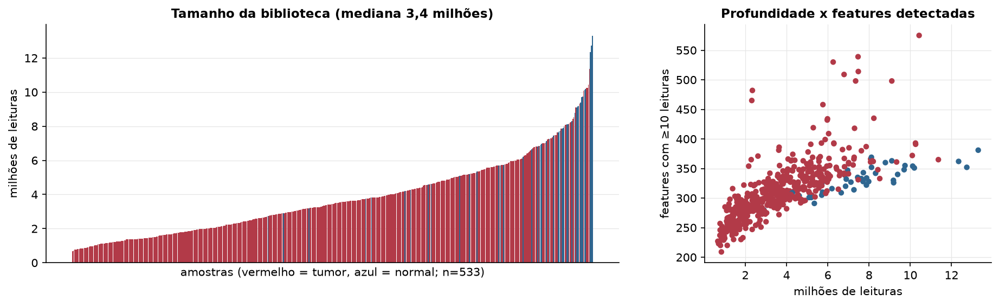
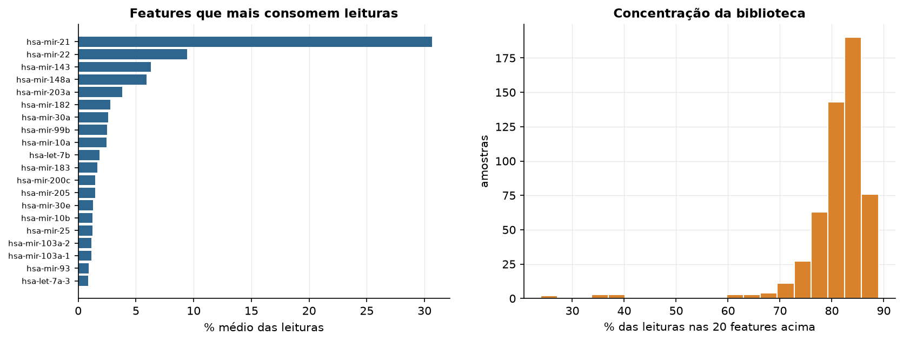
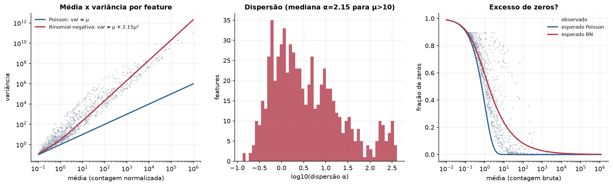
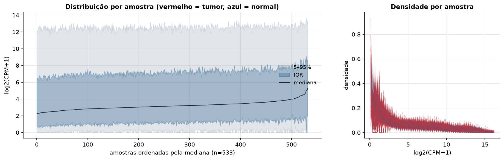
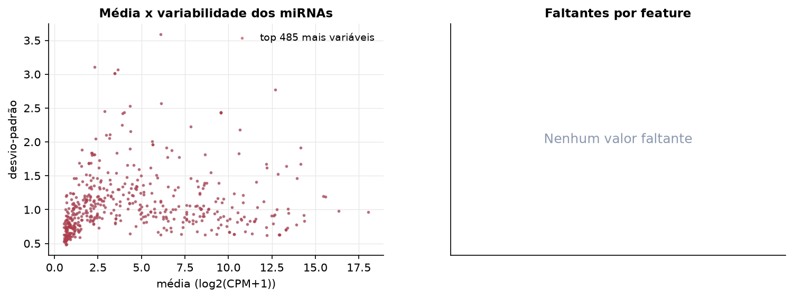
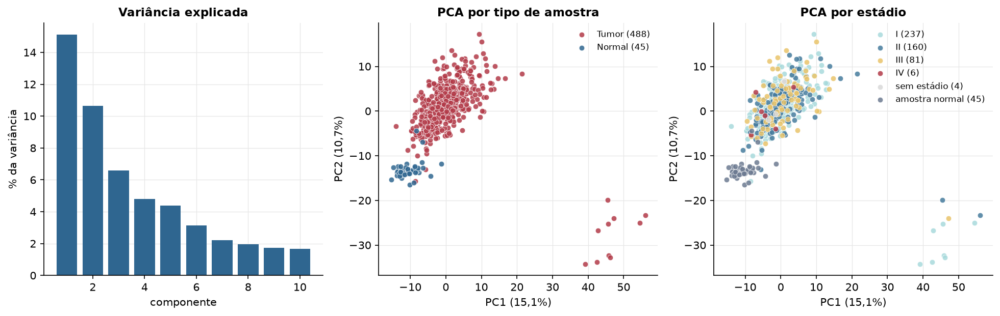
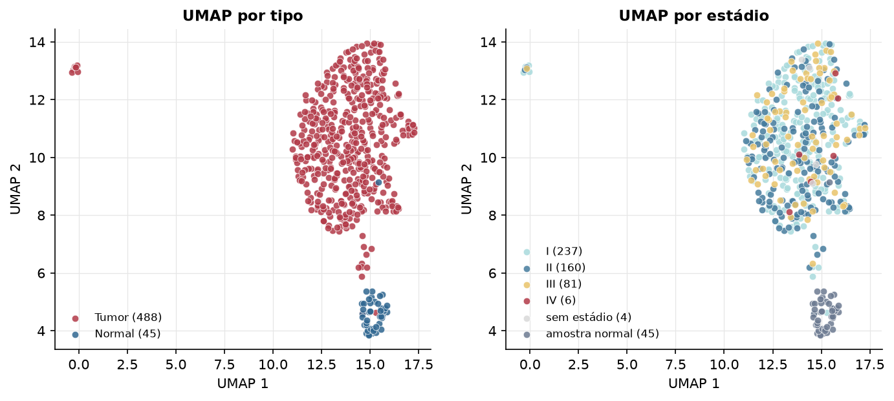
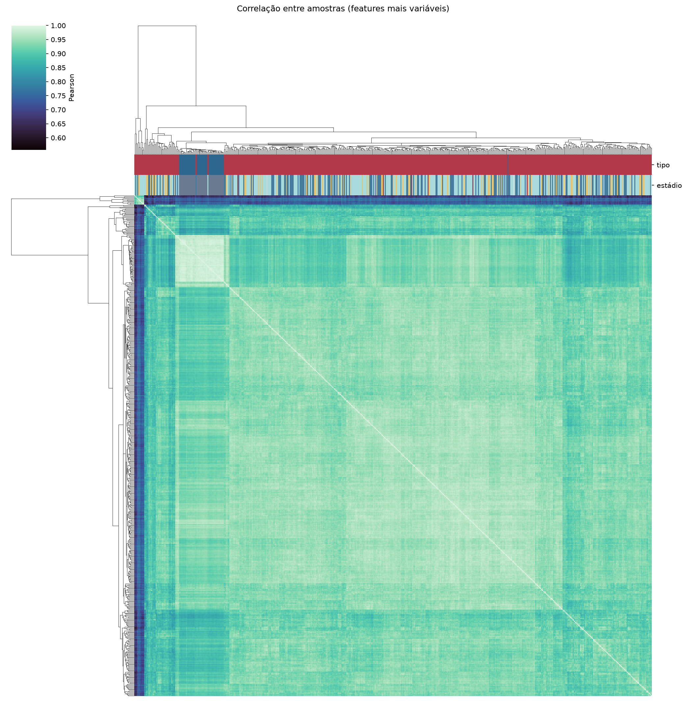
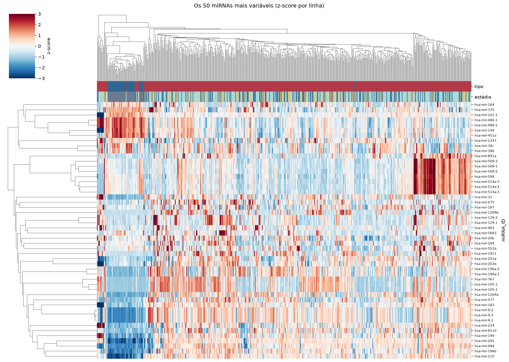
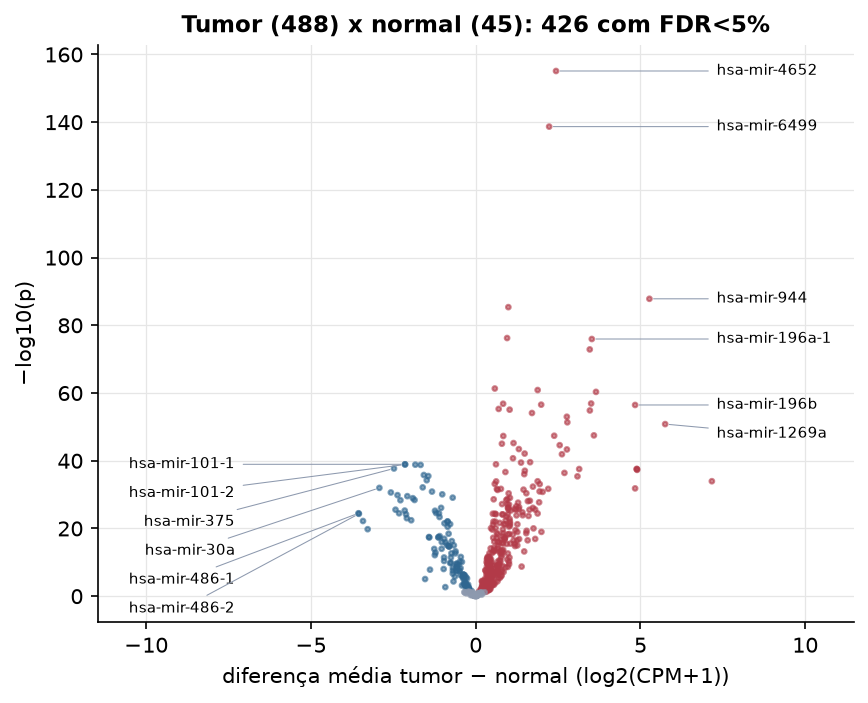

LUSC · miRNA-seq: contagens brutas (GDC)
BCGSC miRNA Profiling (miRBase v21) · gerado em 22/10/2026 01:43
3,4 Mtamanho mediano
2,15dispersão mediana α
485miRNAs
488amostras tumorais
45amostras normais
0,0%valores faltantes
Fonte: API do GDC (BCGSC miRNA Profiling)
Principais resultados
- Bibliotecas de 0,7 a 13,3 milhões de leituras (mediana 3,4). 1.077 de 1.881 features têm leitura em pelo menos 10% das amostras.
- A variância cresce bem acima da média: a dispersão mediana da binomial negativa é α=2.15 (para features com média > 10). Isso descarta um modelo Poisson e indica binomial negativa (ou Poisson-lognormal) na verossimilhança.
- A fração de zeros é compatível com a binomial negativa (diferença mediana -10,1%); inflação de zeros não parece necessária.
- Em média 82,5% das leituras de cada amostra vão para as 20 features mais abundantes.
- 485 miRNAs medidos em 533 amostras (488 tumorais e 45 normais); 0,0% dos valores estão faltando.
- Os dois primeiros componentes principais explicam 15,1% e 10,7% da variância das features mais variáveis.
- Correlação mediana entre amostras: 0,93.
- Amostras com correlação muito abaixo das demais (possíveis outliers técnicos): TCGA-18-4083-01, TCGA-21-1082-01, TCGA-21-1081-01, TCGA-21-1070-01, TCGA-22-1000-01, TCGA-21-1071-01, TCGA-22-1005-01, TCGA-22-1017-01, TCGA-22-1016-01, TCGA-33-4533-01.
- Tumor x normal: 426 miRNAs diferentes com FDR < 5% (306 maiores no tumor, 120 maiores no normal; 45 pacientes têm o par tumor-normal).
- Mais aumentados no tumor: hsa-mir-4652, hsa-mir-6499, hsa-mir-944, hsa-mir-1910, hsa-mir-3662, hsa-mir-196a-1, hsa-mir-196a-2, hsa-mir-7974.
- Mais reduzidos no tumor: hsa-mir-101-1, hsa-mir-101-2, hsa-mir-140, hsa-mir-100, hsa-mir-375, hsa-mir-29c, hsa-mir-181a-1, hsa-mir-195.
- Associações clínicas com p < 0,05 nos componentes principais: PC2 com idade (p=0.0023).
Biblioteca


Sobredispersão e zeros

Exploração em log2(CPM+1)
Features com CPM ≥ 1 em pelo menos 20% das amostras (485 features).
Distribuição dos valores


Estrutura das amostras




Tumor x normal

Features mais diferentes entre tumor e normal
| miRNA_ID | diferenca_tumor_menos_normal | t | p | fdr |
|---|---|---|---|---|
| hsa-mir-4652 | 2.437 | 39.997 | 7.63e-156 | 3.7e-153 |
| hsa-mir-6499 | 2.228 | 34.882 | 2.04e-139 | 4.95e-137 |
| hsa-mir-944 | 5.271 | 38.647 | 1.47e-88 | 2.38e-86 |
| hsa-mir-1910 | 0.99 | 23.87 | 4.24e-86 | 5.14e-84 |
| hsa-mir-3662 | 0.952 | 22.322 | 5.67e-77 | 5.5e-75 |
| hsa-mir-196a-1 | 3.523 | 26.84 | 1.1e-76 | 8.91e-75 |
| hsa-mir-196a-2 | 3.461 | 25.971 | 1.3e-73 | 9.01e-72 |
| hsa-mir-7974 | 0.579 | 19.057 | 4.62e-62 | 2.8e-60 |
| hsa-mir-301b | 1.879 | 26.419 | 1.3e-61 | 6.98e-60 |
| hsa-mir-31 | 3.65 | 24.667 | 4.54e-61 | 2.2e-59 |
| hsa-mir-105-1 | 3.503 | 20.803 | 1.24e-57 | 5.47e-56 |
| hsa-mir-5579 | 0.831 | 18.621 | 1.45e-57 | 5.87e-56 |
| hsa-mir-1248 | 1.986 | 21.515 | 2.71e-57 | 1.01e-55 |
| hsa-mir-196b | 4.837 | 34.195 | 3.36e-57 | 1.16e-55 |
| hsa-mir-4778 | 0.696 | 17.996 | 4.95e-56 | 1.6e-54 |
| hsa-mir-4449 | 1.029 | 18.243 | 8.14e-56 | 2.47e-54 |
| hsa-mir-105-2 | 3.464 | 20.408 | 1.4e-55 | 3.98e-54 |
| hsa-mir-615 | 1.707 | 20.008 | 7.87e-55 | 2.12e-53 |
| hsa-mir-577 | 2.765 | 22.422 | 1e-53 | 2.56e-52 |
| hsa-mir-183 | 2.78 | 26.256 | 4.4e-52 | 1.07e-50 |
| hsa-mir-1269a | 5.749 | 25.032 | 1.49e-51 | 3.45e-50 |
| hsa-mir-767 | 3.587 | 19.605 | 3.19e-48 | 7.03e-47 |
| hsa-mir-1269b | 2.381 | 16.206 | 4.11e-48 | 8.67e-47 |
| hsa-mir-4664 | 0.836 | 18.945 | 4.86e-48 | 9.82e-47 |
| hsa-mir-769 | 1.147 | 21.64 | 5.98e-46 | 1.16e-44 |
| hsa-mir-4766 | 0.794 | 18.106 | 9.35e-46 | 1.74e-44 |
| hsa-mir-224 | 2.548 | 21.073 | 2.51e-45 | 4.5e-44 |
| hsa-mir-760 | 1.309 | 18.947 | 3.53e-44 | 6.12e-43 |
| hsa-mir-6510 | 2.767 | 20.349 | 4.58e-44 | 7.65e-43 |
| hsa-mir-877 | 1.484 | 18.244 | 7.55e-43 | 1.22e-41 |
Associação com variáveis clínicas
p-valores da associação dos três primeiros componentes principais (só tumores) com estádio (Kruskal-Wallis), sexo (Mann-Whitney), idade (Spearman) e sobrevida global (Cox univariado).
| estádio (Kruskal) | sexo (Mann-Whitney) | idade (Spearman) | sobrevida OS (Cox) | |
|---|---|---|---|---|
| PC1 (15,1%) | 0.249 | 0.898 | 0.052 | 1 |
| PC2 (8,5%) | 0.1 | 0.863 | 0.002 | 0.108 |
| PC3 (6,5%) | 0.779 | 0.824 | 0.394 | 0.276 |